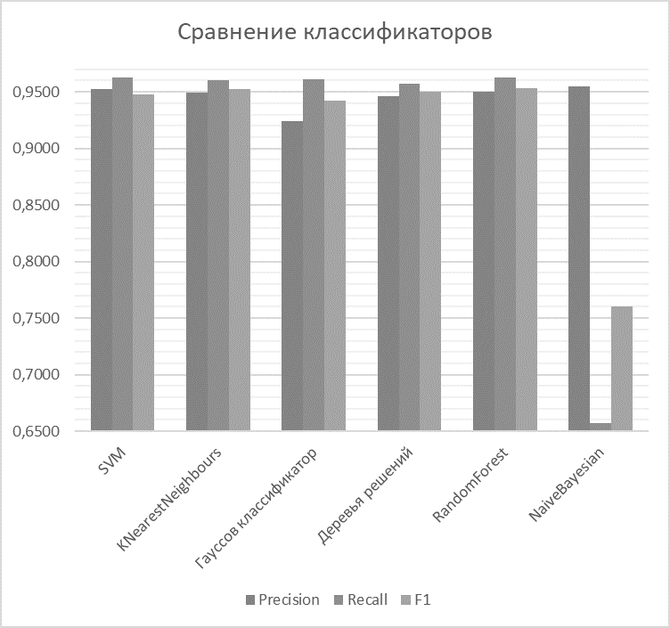

Введение
В современном мире в интернете ежедневно появляется огромное количество новостных заголовков о внешнеторговой деятельности государств, однако часто эти статьи, заметки и обзоры представляются пользователю общим списком, который, обычно отсортирован по времени добавления и не позволяет оценить полезность информации, действительно ли она соответствует искомой категории. В связи с этим, возникает необходимость автоматической классификации внешнеторговой информации.
1. Актуальность темы
Автоматизированная классификация текстовой информации относится к классу трудно формализуемых задач и в настоящее время является особенно актуальной в связи с необходимостью автоматизации процесса сбора и анализа информации, полученной из сети Интернет, на основе интеллектуальных программных систем.
Проблемой универсальной автоматической классификации текстов является то, что она не дает такого уровня полноты и точности классификации, как специализированные классификаторы, настроенные на определенный класс документов. В связи с этим часто возникает необходимость в исследовании и реализации специализированных алгоритмов.
Так как количество внешнеторговой информации в интернете постоянно растет, исследование и разработка алгоритма автоматической классификации текстов по внешнеторговой информации государств является актуальной проблемой.
2. Цель и задачи исследования, планируемые результаты
Целью исследования является разработка алгоритма автоматизированной классификации информации о внешнеторговой деятельности государств и его внедрение в информационно-поисковую систему.
Основные задачи:
- Анализ существующих методов классификации естественно-языковой текстовой информации.
- Анализ методов сбора информации в Интернет.
- Анализ этапов создания ИПС.
- Разработка архитектуры программной модели.
- Разработка программной модели информационно-поисковой системы.
- Разработка алгоритма автоматизированной классификации информации о внешнеторговой деятельности государств.
- Оценка модуля автоматизированной классификации информации для ИПС о внешнеторговой деятельности государств.
Новизна заключается в разработке программной модели классификации информации о внешнеторговой деятельности государств, полученной на основе анализа страниц сети Интернет.
Планируется, что разработанные алгоритмы и программы составят основу информационно-поисковой системы, работающей с информацией о внешнеторговой деятельности государств.
3. Обзор исследований и разработок
В открытом доступе находится большое количество исследований по теме автомтатической классификации. Однако исследований по классификации информации внешнеторговой деятельности государств обнаружить не удалось.
3.1. Обзор международных источников
В исследовании Многоуровневая классификация экономических статей на основе онтологий
[1]
, Сергей Вогринчич и Зоран Босник представляют подход к задаче автоматической категоризации документов в области экономики. Они оценили точность тестируемых моделей и пришли к выводу, что все они имеют потенциал для использования, а также на основании результатов выявили приемущества использования сложных групп подходов.
В работе Исследование категоризации текста на WEKA
[2]
были проанализированы три поплуярных алгоритма категоризации текста, а именно наивный байесовский классификатор, дерево решений и метод опорных векторов. Сделан вывод о том, что на экономических текстах лучше всего себя проявил наивный байесовский классификатор.
В статье Эффективность гомогенного ансамбля классификаторов для турецкого и английского текстов
[3]
представляется сравнительный анализ использования гомогенных ансамблей для классификации турецких и английских текстов. В выводах показано превосходство гомогенного ансамбля Random Forest.
3.2. Обзор национальных источников
В статье Анализ методов классификации информации в интернете при решении задач информационного поиска
[4]
автор рассматривает несколько подходов к классификации информации и предлагает для повышения эффективности использовать комбинированный подход.
В статье Автоматическая классификация текстовых документов с использованием нейросетевых алгоритмов и семантического анализа
[5]
рассмотрены нейросетевые алгоритмы,
применяемые в задачах классификации
текстов, а так же изложены методы и
модели семантического анализа текстов
применительно к задаче улучшения качества
рубрицирования.
В работе Сравнительный анализ алгоритмов
классификации и способов
представления Web-документов
[6]
был рассмотрен ряд алгоритмов классификации
и вопросы предварительной обработки текстов. На основе анализа
результатов экспериментов был предложен ряд усовершенствований
классификаторов.
3.3. Обзор локальных источников
В реферате Линкина Виктора Олеговича Исследование алгоритмического обеспечения интеллектуальной системы классификации политематических гипертекстовых документов
[7]
проведен анализ особенностей классификации документов в случае, когда классы могут пересекаться и документ может быть отнесен к нескольким классам.
В реферате Трегубовой Юлии Александровны Исследование метода тематически ориентированной классификации результатов поиска в Интернет
[8]
проведен анализ существующих подходов к повышению релевантности тематического поиска путем классификации результатов выдачи поисковых систем.
4. Обзор и анализ алгоритмов бинарной классификации информации о внешнеторговой деятельности государств
Для того, чтобы выбрать наиболее эффективный алгоритм для классификации внешнеторговых текстов необходимо провести их анализ на определенный выборке. Задача является актуальной для информационно-поисковых систем, направленных на поиск и обработку информации по международной торговле.
В разделе приведен обзор алгоритмов классификации информации и их сравнение при работе с данными по внешнеторговой экономической деятельности государств.
4.1. Отбор терминов для классификации
Любая классификация производится на основе каких-либо признаков. Для того чтобы классифицировать текст прежде всего необходимо определить значения выбранных признаков для этого текста. На сегодняшний день одной из наиболее эффективных для автоматического определения необходимых признаков является TF-IDF мера
[9]
. TF-IDF - cтатистическая мера, которая используется для оценки значимости слова в документе, который является частью набора документов. Вес слова пропорционален частоте его употребления в документе и обратно пропорционален частоте его употребления во всем наборе (документах). Количество признаков было выбрано 10 произвольно, однако при его выборе учитывалось изменение f1 метрики на более высоких показателях данного параметра.
4.2. Отбор материала для классификации
Для тестирования алгоритмов классификации решено использовать набор классифицированных статей от reuters в количестве 10788 штук, из которых 7769 приходятся на обучающую выборку и 3019 – на тестируемую. Статьи классифицированы на 90 категорий. В исследовании реализован бинарный классификатор статей по внешнеторговым признакам, поэтому остальные 89 категорий были помечены, как «other».
В качестве классификаторов в исследовании выбраны следующие алгоритмы: SVM (support vector machine), KNearestNeighbours, Гауссов классификатор, Деревья решений, классификатор RandomForest и Наивный Байесовский классификатор.
4.3. Расчет метрик для алгоритмов
Для возможности сравнения алгоритмов расчитаны метрики точности полноты и F1 - меры для каждого из алгоритмов с различными вариантами их параметров.
4.3.1. SVM
SVM (support vector machine) - набор алгоритмов классификации, которые переводят полученные исходные векторы в пространство большей размерности и находят разделяющую гиперплоскость, которая разделяет представленные классы
[10].
В исследовании проводилось тестирование данного классификатора на разных показателях вводимого ядра, гаммы и параметр штрафа. При этом были рассчитаны метрики точности, полноты и f1 метрика. Результаты приведены в таблице 1.
Таблица 1 - Метрики для классификатора SVC
| Пар-ры |
Precision |
Recall |
F1 |
|
kernel = "linear",
C = 0.025
|
0.924 |
0.9612 |
0.9423 |
| gamma = 2, C = 1 |
0.9578 |
0.9626 |
0.946 |
| gamma = 3, C = 1 |
0.9522 |
0.9626 |
0.9477 |
Согласно полученным данным третье значение является оптимальным согласно F1 - мере. В дальнейшем сравнении будут использованы данные по этим параметрам.
4.3.2. KNearestNeighbours
В основе алгоритма ближайших соседей (kNN) лежит правило, что тестируемый объект со своим набором признаков принадлежит классу, которому принадлежат большинство из k его ближайших соседей
[11].
В исследовании проводилось тестирование данного классификатора на разных показателях вводимого k, а именно на 3-х, 5-ти и 10-ти соседях. При этом были рассчитаны метрики точности, полноты и f1 метрика. Результаты приведены в таблице 2.
Таблица 2 - Метрики для классификатора kNN
| k |
Precision |
Recall |
F1 |
| 3 |
0.946 |
0.9559 |
0.95 |
| 5 |
0.9494 |
0.9603 |
0.9527 |
| 10 |
0.9528 |
0.9566 |
0.9498 |
Согласно полученным данным значение кол-ва соседей 5 является оптимальным согласно F1 - мере. В дальнейшем сравнении будут использованы данные по этому параметру.
4.3.3. Гауссов классификатор
Основная идея гауссовского классификатора заключается в предположении того, что функция правдоподобия (тренировочный набор) известна для каждого класса и равна плотности гауссовского нормального распределения
[12].
В исследовании проводилось тестирование данного классификатора на разных показателях вводимого аргумента радиально-базисной функции. При этом были рассчитаны метрики точности, полноты и f1 метрика. Результаты приведены в таблице 3.
Таблица 3 - Метрики для Гауссова классификатора
| RBF(x) |
Precision |
Recall |
F1 |
| 1.0 |
0.924 |
0.9612 |
0.9423 |
| 0.5 |
0.924 |
0.9612 |
0.9423 |
| 1.5 |
0.924 |
0.9612 |
0.9423 |
Согласно полученным данным значение RBF слабо влияет на показатели согласно F1 - мере.
4.3.4. Деревья решений
Дерево решений – классификатор, который на тренировочных данных выстраивает структуру, узлам которого являются атрибуты различий, в листьях записаны атрибуты целевой функции, а на ребрах – необходимое множество атрибутов. Задача дерева решений – создать модель, которая предсказывает значение целевой функции на основе нескольких входов
[13].
В исследовании проводилось тестирование данного классификатора на разных показателях вводимого аргумента максимальной глубины дерева. При этом были рассчитаны метрики точности, полноты и f1 метрика. Результаты приведены в таблице 4.
Таблица 4 - Метрики для дерева решений
| max |
Precision |
Recall |
F1 |
| 5 |
0.9458 |
0.9573 |
0.9501 |
| 10 |
0.9421 |
0.9523 |
0.9465 |
| 15 |
0.943 |
0.95 |
0.9462 |
Согласно полученным данным глубина дерева 5 является оптимальным согласно F1 - мере. В дальнейшем сравнении будут использованы данные по этому параметру.
4.3.5. Классификатор RandomForest
RandomForest – это алгоритм машинного обучения, который заключается в использовании гомогенного ансамбля деревьев решений. Основная идея состоит в использовании большого ансамбля деревьев решений, который за счет их большого количества улучшает результат классификации
[14].
В исследовании проводилось тестирование данного классификатора на разных показателях вводимого аргумента максимальной глубины дерева. При этом были рассчитаны метрики точности, полноты и f1 метрика. Результаты приведены в таблице 5.
Таблица 5 - Метрики для RandomForest
| max |
Precision |
Recall |
F1 |
| 5 |
0.924 |
0.9502 |
0.9487 |
| 10 |
0.9606 |
0.9626 |
0.9612 |
| 15 |
0.9419 |
0.953 |
0.9527 |
Согласно полученным данным глубина дерева 10 является оптимальным согласно F1 - мере. В дальнейшем сравнении будут использованы данные по этому параметру.
4.3.6. Наивный Байесовский классификатор
В основе наивного Байесовского классификатора лежит теорема Байеса. Данный классификатор стал одним из стандартных универсальных методов классификации. Достоинством данного классификатора является относительно небольшое количество данных, необходимых для обучения
[15].
В исследовании проведено тестирование данного классификатора. При этом были рассчитаны метрики точности, полноты и f1 метрика. Результаты приведены в таблице 6.
Таблица 6 - Метрики для NaiveBayesian
| Precision |
Recall |
F1 |
| 0.9551 |
0.6568 |
0.7602 |
4.4. Сравнение классификаторов
После проведения тестирования выполнен сравнительный анализ классификаторов по точности, полноте и f1 мере
[16]
. В связи с тем, что была использована достаточно большая коллекция тренировочных документов, а также благодаря использованию алгоритма отбора признаков TF-IDF, полученные результаты отличаются достаточно незначительно и все имеют хорошие показатели распознавания текстов с внешнеторговой международной информацией. Исключение составляет лишь наивный Байесовский алгоритм, который показал уровень F1 в 0.7602, что не является удовлетворительным результатом для бинарной классификации. Результаты сравнения представлены на рисунке 1. По взвешенной оценке, наилучшим образом себя показал гомогенный ансамбль RandomForest на глубине дерева 10.

Рисунок 1 - Сравнение классификаторов
(анимация: 10 кадров, 10 циклов повторения, 53 килобайта)
Выводы
Проведен анализ алгоритмов классификации, таких как SVM (support vector machine), KNearestNeighbours, Гауссов классификатор, Деревья решений, классификатор RandomForest и Наивный Байесовский классификатор. Реализован алгоритм отбора и отобраны признаки классификации по TF-IDF. Проведено тестирование алгоритмов с различными параметрами по тренировочным и тестовым данным, определены оптимальные параметры для каждого алгоритма на основании оценки F1 меры. Проведено сравнение алгоритмов сравнением оптимального значения F1 меры, полноты и точности для каждого из них. Гомогенный ансамбль RandomForest установлен, как оптимальный классификатор для бинарной классификации внешнеторговой информации. Установлены неудовлетворительные результаты классификации наивным Байесовским классификатором.
Список источников
-
1. Sergeja Vogrinčič1, Zoran Bosnić, Ontology-based multi-label classification of economic articles. Computer Science and Information Systems, 2011 [источник в библиотеке]
-
2. Li Dan, and Liu Lihua, Zhang Zhaoxin, Research of Text Categorization on WEKA. Third International Conference on Intelligent System Design and Engineering Applications, 2013 [источник в библиотеке]
-
3. Zeynep Hilal Kilimci, Selim Akyokus, Sevinc Ilhan Omurca, The Effectiveness of Homogenous Ensemble Classifiers for Turkish and English Texts. International Symposium on Innovations in Intelligent Systems and Applications (INISTA), 2016 [источник в библиотеке]
-
4. Мэн Цинань, Анализ методов классификации информации в интернете при решении задач информационного поиска. Научный журнал
Моделирование, оптимизация и информационные технологии
№2(13), 2016
-
5. Андреев А.М., Березкин Д.В., Морозов В.В., Симаков К.В., Автоматическая классификация текстовых документов с использованием нейросетевых алгоритмов и семантического анализа. Всероссийская Научная Конференция, 2003 [источник в библиотеке]
-
6. Максаков Алексей, Сравнительный анализ алгоритмов классификации и способов представления Web-документов. Третий российский семинар по оценке методов информационного поиска, 2005 [источник в библиотеке]
-
7. Линкин В.О., Исследование алгоритмического обеспечения интеллектуальной системы классификации политематических гипертекстовых документов, 2013 [Электронный ресурс]. – Режим доступа:http://masters.donntu.org/2013/fknt/linkin/diss/index.htm
-
8. Трегубова Е.А., Исследование метода тематически ориентированной классификации результатов поиска в Интернет, 2014 [Электронный ресурс]. – Режим доступа:http://masters.donntu.org/2014/fknt/tregubova/diss/index.htm
-
9. Salton, G. and Buckley, C. Term-weighting approaches in automatic text retrieval. Information Processing & Management, 1988
-
10. Nello Cristianini, John Shawe-Taylor An Introduction to Support Vector Machines and Other Kernel-based Learning Methods. — Cambridge University Press, 2000
-
11. Brett Lantz, Machine Learning with R. Pack Publishing. Birmongham-Mumbai, 2013
-
12. Breiman, Leo; Friedman, J.H., Olshen, R.A., & Stone, C.J. Classification and regression trees. Monterey, CA: Wadsworth & Brooks/Cole Advanced Books & Software, 1984
-
13. Hastie, T., Tibshirani R., Friedman J. Chapter 15. Random Forests // The Elements of Statistical Learning: Data Mining, Inference, and Prediction. — 2nd ed. — Springer-Verlag, 2009. — 746 с.
-
14. Hand, DJ, & Yu, K. «Idiot’s Bayes — not so stupid after all?» International Statistical Review, 2001. - с 385—399.
-
15. 7. Е.И. Большакова Автоматическая обработка текстов на естественном языке и компьютерная лингвистика: учеб. пособие / Большакова Е.И., Клышинский Э.С., Ландэ Д.В., Носков А.А., Пескова О.В., Ягунова Е.В. — М.: МИЭМ, 2011. — 272 с.
-
16. Титаренко М.Г., Коломойцева И.А. Обзор и анализ алгоритмов для осуществления бинарной классификации информации о внешнеторговой деятельности государств // Материалы международной научно-практическаой конференции «Программная инженерия: методы и технологии разработки информационновычислительных систем» (ПИИВС-2018) – Донецк: ДонНТУ, 2018 [источник в библиотеке (русский)][источник в библиотеке (английский)]